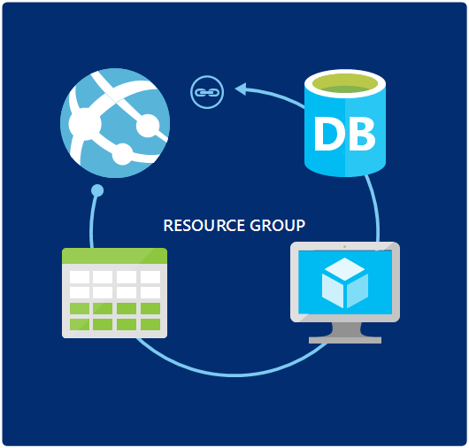

In the html code the video uses tags h1 and h2 to specify heading of a particual topic I have used li tag to define the headings. Aslo have used tags like Div and some attributes like id to refer the same in css style. In the video there is no logo in the title tag of the web page where as i have added a logo in title tag. When it comes to changes in css i have changed the following things from the video. background color of body tag. For header i have used an attribute id named top where i have changed the background color, text alignment and display. For headings h2,h3 etc. i have changed the font family, font size and color. for the li, ul and p tag the font weight, size, family, style and text align has been added. The navigation also has some additions like background color, font size, text aling, display, word spacing and height. for the section tag the width, background color, border color, style and padding values are changed. The values added or changed for footer and image include width, height, background color, text align, font size, display, margin-left, margin-right. Also there is addition of some css for anchor tag (a) which gives color to text, its alignment, decoration and when you hover over the link it changes its color.
Microsoft Azure Web Apps
Azure is a cloud computing service offered by Microsoft. The services included in cloud are Iaas (Infrastructure as a Service), Paas (Platform as a Service), SaaS (Software as a Service) etc. Azure Web Apps is a platform-as-a-service (PaaS). Platform as a service (PaaS) is a cloud computing model in which a third-party provider delivers hardware and software tools usually those needed for application development to users over the internet which enables developers to build web applications which are secure, mission-critical, and highly scalable. Developers can choose from various languages such as C#, HTML5, PHP, Java, Node.js, and Python to write their code.
Introduction to Azure Resource Group
An Azure Resource Group is a logical container for grouping Azure resources. When you create any resource in Azure, you will associate that resource with a new or existing resource group. Example, if a web application consist of two parts front end which is website where the users will interact with the application and backend which is database which will be used to store data and user inputs. Here the front end (Website) and database are individual resources which will make the complete web application. Azure Resource Group gives you a way to manage and monitor resources that comprise a solution. By Grouping resources this way it simplifies implementation, deployment, management, and monitoring of resources. It also makes billing easier as it gives u a way to view cost of the resource group rather than to view for individual resources. Also the resources in the group can span regions if required.

Fig.1. Microsoft Resource Group
Introduction to app service plan
Since Azure provides Paas and provides us with the option of resource groups there are various pricing plans that azure offers to use the PaaS service. It gives you a way to define the region and pricing tier for various type of app services which include mobile apps, web apps, logic apps etc. Azure consist of 5 different pricing tires for app services which include free, shared, basic, standard and premium which are explained below.
1. Free: - In this tire you have limited daily compute and network bandwidth which is intended for evaluation purpose only. The resources used in this service are shared by other subscribers.
2. Shared: - In shared tire the daily compute and network bandwidth limits are increased. The increased limits are intended for a low traffic website and applications. It also supports some additional features such as custom domains and scale out to multiple shared instances.
3. Basic: -This tire has no daily limits of bandwidth and compute. It also provides dedicated machine instances to host the application. In this tier, you can scale up the size of your dedicated virtual machine to increase the number of cores and RAM. This tire also consist of a Service level Agreement.
4. Standard: -This tire consists of features of all the above tires and has some additional features such as auto scale, deployment slots, automated backups etc.
5. Premium: -This tire consist of all of the features of standard tire with some additions such as number of deployment slots, storage, and backups. It also enables BizTalk integration capabilities.
In azure app service your application can exist in one plan for example, you can start to build the application in the free plan as after deployment as the needs change you can upgrade to a higher pricing plan. When you upgrade to a higher plan you dont need to develop a new application the existing development is carried forward which makes it user friendly. Also, when you want to scale down you can move to lower pricing tires easily. This makes Azure app service customer friendly where you can scale up or down at any point without the need to create or make changes to your existing application.
Create Azure app using azure portal
As azure provides users with so many services in this section, we will look how to create an web app with SQL database. To do the same we need to follow some steps shown below.
Step1: -Sign in to Azure Portal.
Step2: -Click the +New button in the lower left corner.
Step3: -select the Web + Mobile option in create blade.
Step4: -click Azure Marketplace at the bottom of the Web + Mobile.
Step5: -Select the Web App + SQL option.
Step6: -click the Create button at the bottom of the blade to begin configuring the web app and SQL database.
Step7: -specify the Azure Resource Group name by creating a new resource group.
Step8: -Configure required web apps setting I.e. select globally unique URL, App Service Plan etc. And click OK.
Step9: -configure required SQL Database setting I.e. upload an existing or create a new one by clicking create new database. After which configure the server settings by selecting the server option. Once done click OK which will take you back to Database blend now click OK to apply new database settings. Which will then take you to Web+SQL blade.
Step10: -click the create button to create web app and SQL database.
Add an Azure Redis Cache to the Azure Resource Group
Caching is done by many applications to improve performance. Azure provides caching support through Redis Cache. Redis Cache is a distributed, in-memory cache service with level of performance and features unmatched by previous offerings. Following are the steps to add Redis cache to web app.
Step1: - Click on the Add button.
Step2: -Once the new resource panel opens select Redis Cache option.
Step3: - begin configuring the resource.
Step4: -Select the Create button to add it to resource group.
Create Azure Web App using Visual Studios
Visual studios provide several ways to create a web application for Azure. One of which is to use the server explorer window. This option is useful when you want to quickly develop and test the application with some limited resources provisioned for application. Another approach is to create an ASP.NET application. This approach allows you to target web apps or virtual machines when hosting in azure. The third approach which is the most feature-rich approach to creating a web app is to use the Cloud Deployment Project template. This allows to automate the deployment process in Azure.
Create A web App using Server Explorer
Step1: - Open Server explorer from main menu -> View -> Server Explorer.
Strp2: - connect it to your Azure Subscription by right-clicking the Azure icon and selecting the option to Connect To Microsoft Azure Subscription.
Step3:- Sign in to Azure.
Step4: -To create a new web app right-click the App Service node and select the option Create New Site.
Step5: -Specify Settings for your web application.
There are few options for configuring the web app and SQL database but there are Some limitations:
1. If you choose to create a new plan, the pricing tier will default to F1 Free.
2. The name of the SQL database will be set for you and defaults to _db, where is the web app name specified at the top of the dialog. This cannot be changed.
3. You cannot specify the tier for your SQL database if you choose to create one.
4. It is assumed that if you want a database, you want an Azure SQL database.
5. There is no option to add an Azure Redis Cache.
Create a web app using ASP.NET
Step1: -From the Visual Studio main menu select File > New > Project.
Step2:- the New Project dialog appears, expand the Templates node on the left and click the Cloud node to view the available cloud templates. From the list of templates, select the ASP.NET Web Application template.
Step3: - A new dialog box appears in which u can select one of the many templates available.
Step4: - To Change the Authentication click on change authentication button and you can choose from various options available as per the requirement. The options available are no authentication, individual user account, school and work account, windows authentication.
Step5: - once done with the changes click OK to create.
Step6: - Develop the application.
Step7: - when ready to publish right-click the ASP.NET project in Solution Explorer and select the Publish option or select Build -> Publish from the main menu.
Create a Web App using the Azure Resource Group template
Azure resource group templet was introduced in the 2.6 version of Azure SDK it contains JASON files and resource manager to describe your resources. Following are the steps to create azure web app using Azure resource group.
Step1: - to begin open Visual Studio main menu select File > New > Project.
Step2:- In the New Project dialog, expand the Templates node on the left and click the Cloud node to view the available cloud templates.
Step3: -Select the Azure Resource Group from available templets.
Step4: -in the New Project Wizard displays templates for common cloud configurations select Web App + SQL, and click OK.
Step5: - if you need to add a resource to resource group you can do so by double-clicking the WebSiteSQLDatabase.json and expanding the resource section.
Step6: -open JASON outline by selecting View > Other Windows > JSON Outline.
Step7: -to add the required resource right-click the resources node and select Add New Resource. Select the required resource from the list and click Add.